Install in your browser
Flash the M5 Fire Kids Clock onto an original M5Stack Fire (K007) straight from Chrome or Edge on a computer - no tools to install.
- Connect the Fire with a USB-C data cable.
- Press Install, choose the serial port (CP210x / USB-to-UART).
- Wait about 30 seconds until it says the installation is complete.
- On the clock: Settings > Parent setup (phone), scan the QR code and enter your Wi-Fi.
A fresh install erases saved alarms, routine, stars and Wi-Fi. No port shown? Install the CP210x driver.
Other ways to install (esptool, PlatformIO, Arduino IDE): see the flashing guide.